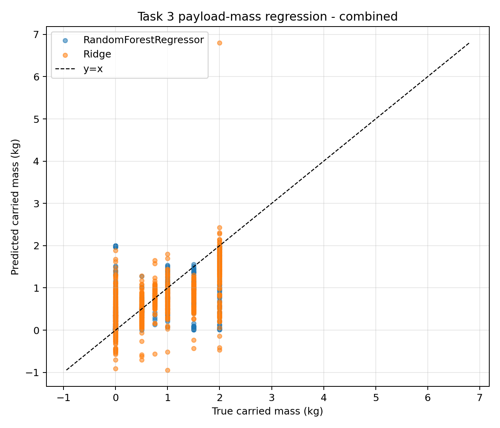
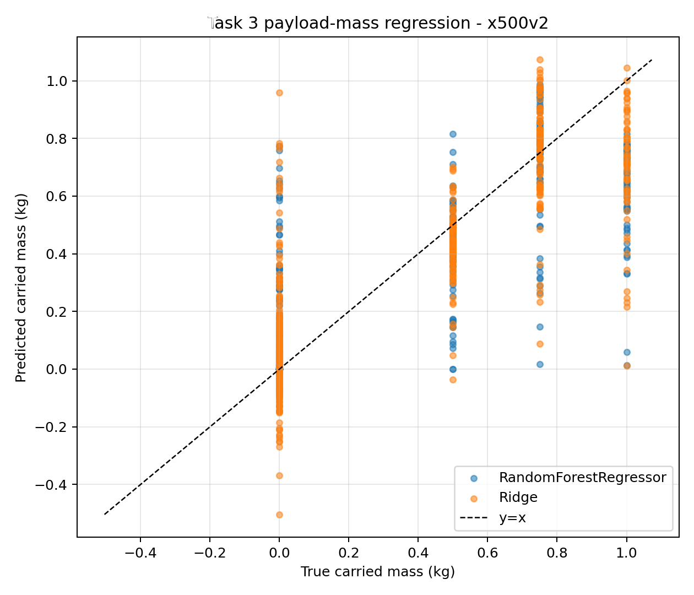
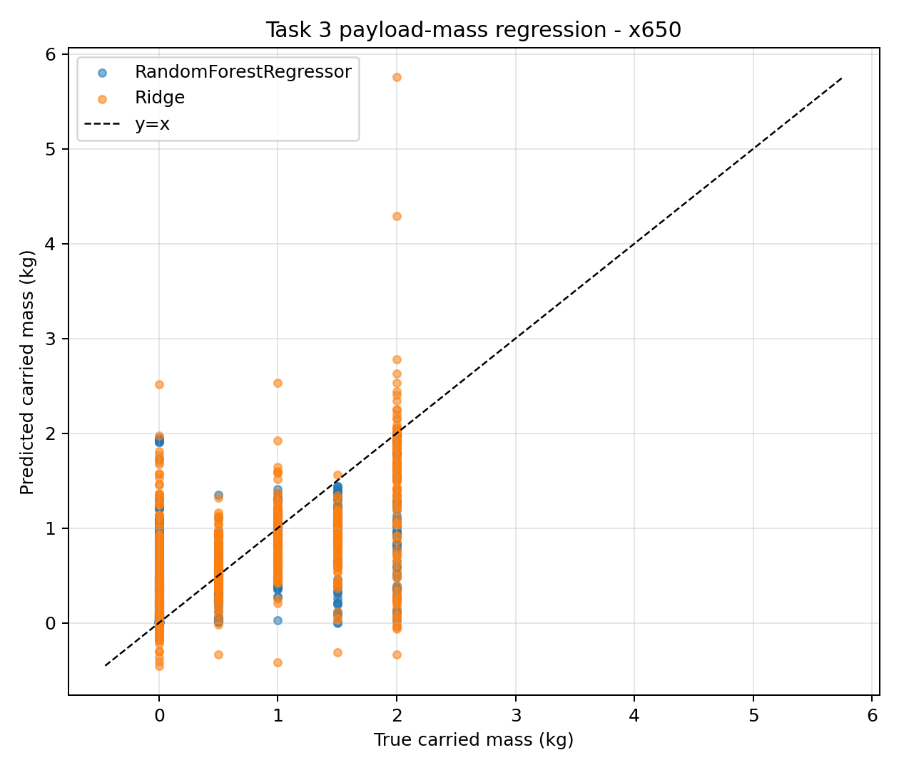
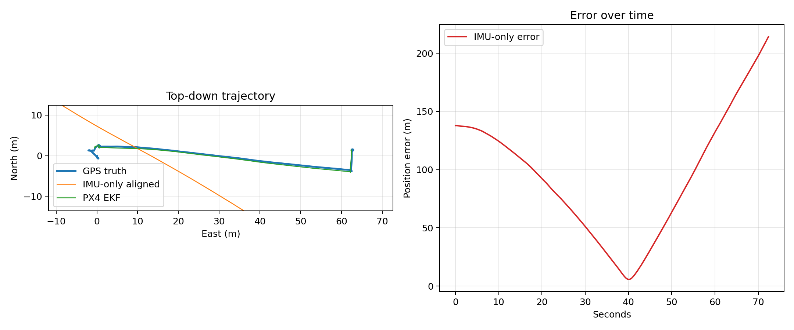
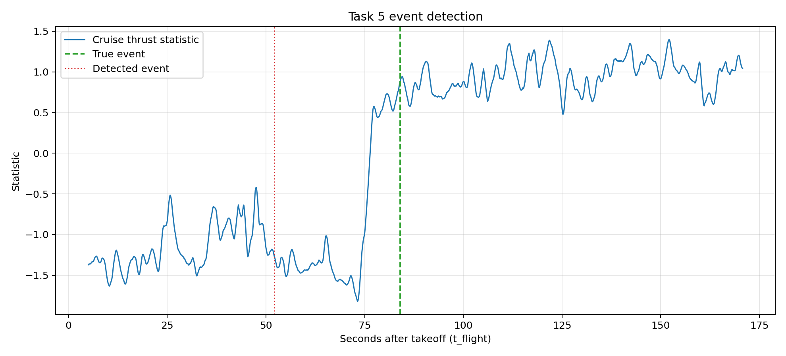
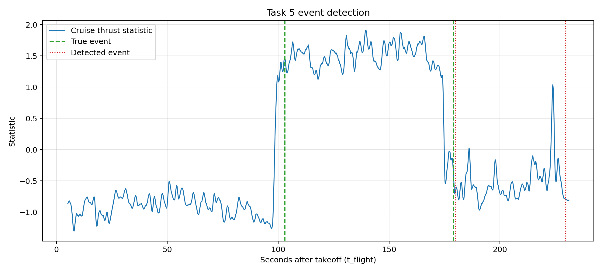

Runnable Devkit
The scripts read raw .ulg files directly and discover topic fields from each log schema. Run from the repository root:
venv/bin/python scripts/task1_frame_classification.py --data . --out outputs
venv/bin/python scripts/task2_payload_classification.py --data . --out outputs
venv/bin/python scripts/task3_mass_regression.py --data . --out outputs
venv/bin/python scripts/task4_navigation_odometry.py --data . --out outputs
venv/bin/python scripts/task5_event_detection.py --data . --out outputsFive Benchmark Families
Task 1: Frame classification
IMU-window features classify frame size. Random Forest accuracy: 0.970.
Task 2: Payload scenario
Scenario classification remains intentionally hard. Random Forest accuracy: 0.342.
Task 3: Mass regression
Continuous carried-mass estimation with motor-command features and per-platform reporting.
Task 4: Navigation
IMU-only drift and PX4 EKF are scored against projected raw GPS truth.
Task 5: Event detection
Cruise-only thrust change detection for pickup/drop events on a takeoff-relative timebase.
Extended Benchmark Results
Task 3: Payload-Mass Regression
| Platform | Model | MAE kg | RMSE kg | R2 | Windows | Groups |
|---|---|---|---|---|---|---|
| combined | RandomForestRegressor | 0.266 | 0.462 | 0.521 | 1338 | 35 |
| combined | Ridge | 0.384 | 0.523 | 0.388 | 1338 | 35 |
| x500v2 | RandomForestRegressor | 0.117 | 0.210 | 0.701 | 564 | 15 |
| x500v2 | Ridge | 0.142 | 0.210 | 0.700 | 564 | 15 |
| x650 | RandomForestRegressor | 0.357 | 0.558 | 0.486 | 774 | 20 |
| x650 | Ridge | 0.449 | 0.631 | 0.343 | 774 | 20 |



Task 4: Navigation/Odometry
| Method | Truth | ATE-RMSE m | Final drift % |
|---|---|---|---|
| IMU-only strapdown | vehicle_gps_position | 276.915 | 496.697 |
| PX4 EKF local_position | vehicle_gps_position | 1.233 | 1.537 |
Altitude scaling was spot-checked on d250_1: raw GPS altitude median 27396 projects to a vertical range of -2.98..5.07 m, and EKF vertical RMS is 0.53 m.

Task 5: Pickup/Drop Event Detection
| Method | Precision | Recall | Mean abs latency s |
|---|---|---|---|
| thresholded_derivative | 0.381 | 0.381 | 1.220 |
| ruptures_pelt | 0.452 | 0.452 | 1.499 |


Limitations
Mass and airframe are partially confounded. Use per-platform Task 3 results for the cleaner dynamics readout.
Task 4 uses onboard GPS-level truth, not motion-capture ground truth. EKF results should be read as agreement with GPS.
Task 5 evaluates against paper-level pickup/drop annotations; motor thrust changes can lead the annotated moment by a few seconds.